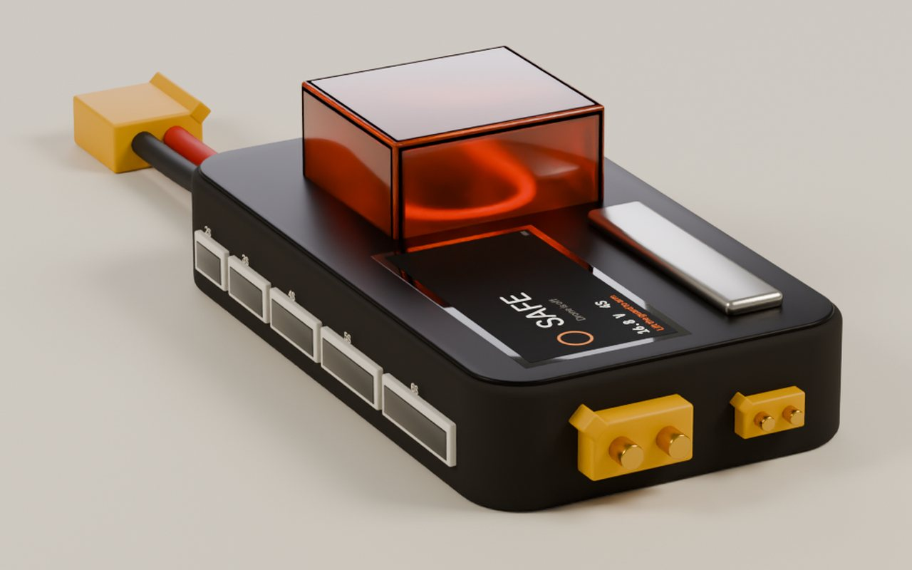
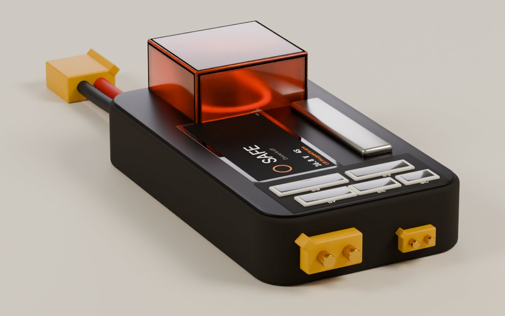
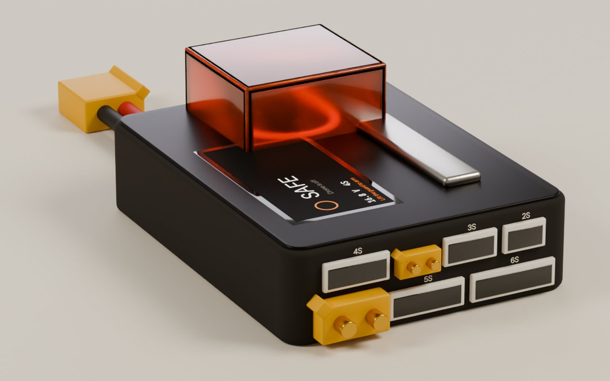
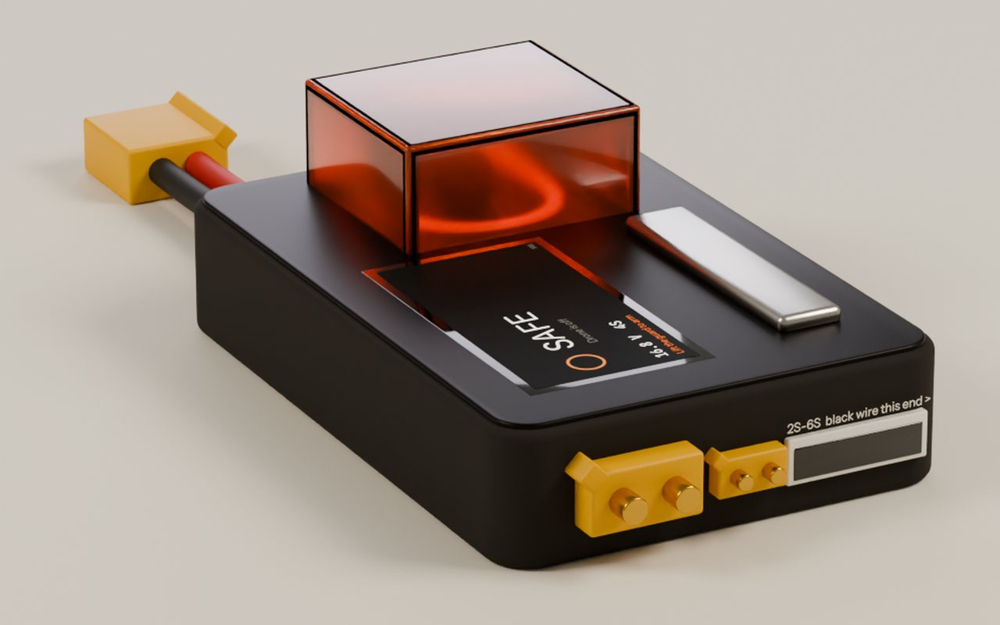
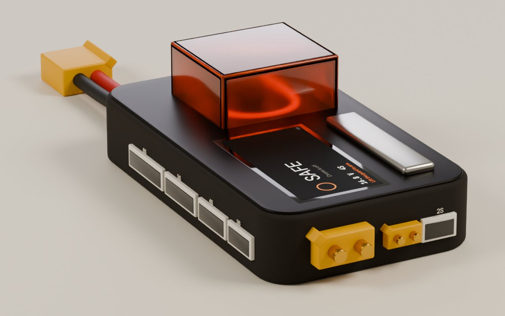

A pack's power lead and balance lead leave it side by side, and on small packs both are short. Five ways to put the XT60, XT30 and the 2S–6S balance sockets together, all at true size, with the distance each balance plug has to travel measured.
45 mmpower and balance lead on a 3S 450 mAh pack (Tattu)
≈100 mmpower lead on a bigger 4S pack
≤ 30 mmtarget gap, balance socket to XT30, for 2S–4S packs
≤ 60 mmtarget gap, balance socket to XT60, for 4S–6S packs
Worst-case reach, mouth to mouth
The farthest balance socket from the plug that pack size uses. Bars past the dashed line need a longer lead than the pack has.
2S–4S socket to the XT30 (small packs, short leads)4S–6S socket to the XT60 (bigger packs, longer leads)

Today: sockets along the back
Too far
100 × 58 × 18 mm
2S 953S 844S 715S 456S 29
A 2S or 3S pack plugged into the XT30 cannot reach its socket at the far end of the back wall.

A · Balance well
Fits every pack
100 × 58 × 18 mm · same body
2S 153S 164S 265S 316S 19
Five keyed top-entry sockets in a shallow recess right above the XT plugs. Body and thickness unchanged.
The balance plug goes in from above and stands about 9 mm proud while plugged; the leads loop up over the edge.
Open sockets on the top face collect dust; wants a small cover.

B · Split-level end wall
Fits every pack
86 × 66 × 20.5 mm · shorter, 2.5 mm thicker
2S 253S 134S 145S 186S 38
Every battery plug on one end wall, in two tiers: XT60, 5S and 6S on the board's underside, XT30 with 2S, 3S and 4S on top. Small-pack sockets sit beside the XT30, big-pack sockets beside the XT60.
All plugs go in sideways, so the profile stays flat with a pack plugged in. Five keyed sockets, no wrong plugging.
The board moves to mid-height with through-hole parts on both faces; the body grows 2.5 mm thicker and 8 mm deeper but 14 mm shorter.

C · One smart socket
Fits every pack
92 × 62 × 18 mm · thinnest, smallest board
2S–4S 16 to XT304S–6S 31 to XT60
One 7-pin socket beside the XT plugs takes 2S to 6S. The mouth is stepped so a short plug slides to the black-wire end; if it sits off, the screen says so and still reads the cells right.
Frees the 80 mm strip the five sockets take today: smaller board, fewer parts, about $0.35 cheaper.
A plug can still be pushed in off-centre. It is harmless, but it is one more thing for the user to get right.

D · Corner wrap
Small packs short
100 × 58 × 18 mm · same body
2S 113S 384S 465S 516S 70
The least change: XT plugs and the 2S socket on the end, the rest round the corner.
A small 3S or 4S pack is right at the limit of its 45 mm lead; the 6S socket is the farthest of any layout.
Recommendation
B, split-level end wall, if every size keeps its own keyed socket. Everything plugs in sideways at one end, nothing sticks up, and it reads as one clean port panel. Cost: 2.5 mm of thickness and a board with parts on both faces.
C, one smart socket, if thin, small and cheap matter most. It keeps 18 mm, shrinks the board and drops four sockets.
A works too, but plugging from above makes the pack stand proud while it is plugged in. D does not solve the problem for small packs.
A correction about the single socket
Earlier I said a small plug sitting a pin off in a wide socket could overheat a resistor. Checking the circuit again, it cannot. The plug can only slide away from pin 1, which leaves that pin unconnected, so no current flows through the 10 Ω resistor. The firmware already reads a shifted plug correctly when the main lead is in. That makes C a safe option, which it was not on my earlier advice.
Lead lengths: Tattu 3S 450 mAh spec table (45 mm discharge and balance), Racers Edge 4S hard case (100 mm lead). Connector sizes: KiCad's JST XH, XT60 and XT30 models.Renders and distances: smokebreak/design/battery-side/sides.py